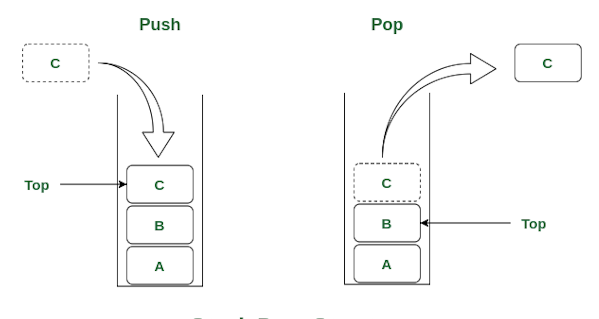
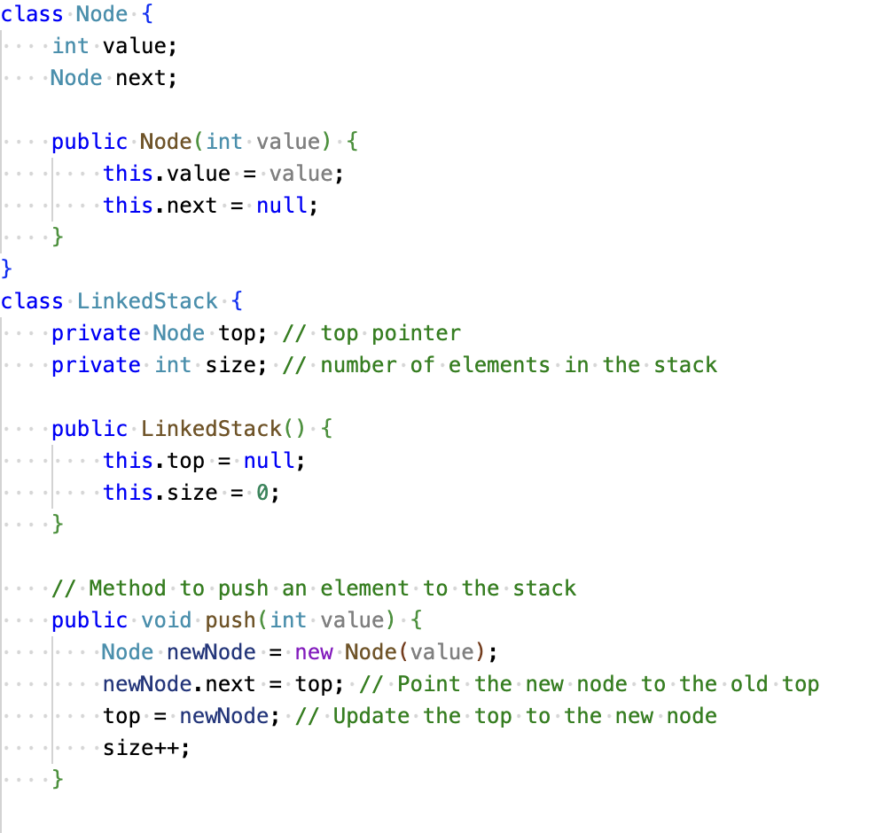
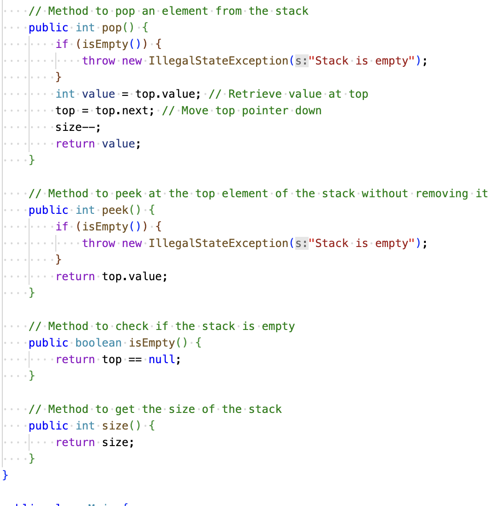
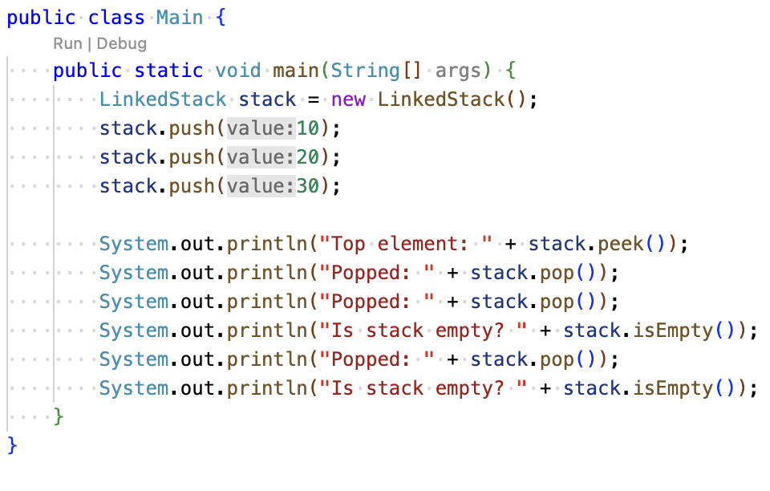

What is a stack?
A stack is a linear data structure that follows a particular order in which the operations are performed.
The order is usally LIFO(Last In First Out), which implies that the element that is inserted last, comes out first.

When would you use a stack?
- Undo/Redo Operations
- Depth-First Search (DFS) in graphs and trees
- Browser History
- When you need to bring things out in the opposite order that they were put in, use a stack
Example of declaring a stack in Java:


